Code
from datasets import load_dataset
import pandas as pd
from rich import print
test_dataset = load_dataset("strickvl/isafpressreleases", split="test")
test_df = pd.DataFrame(test_dataset)Alex Strick van Linschoten
July 1, 2024
My last post outlined the kinds of evaluation I need and want to understand how well my finetuned LLM is performing in the task of structured data extraction from press releases. Let’s start with the core metric I’m interested in, accuracy, and then later we can dive into some of the other evaluation metrics as well.
The headline for this post could well have been: finetuned models beat OpenAI, but evals were a bit painful to implement. There’s a lot of hidden code here in this post and it was slow to run. This step was the first time during the work for the finetuning course where I felt the pain and tradeoffs around the choice to finetune. I can see that without a system of some kind to handle this, the complexity of maintaining it all will start to mount up. But more on that at the end!
This is a long post with lots of detail. I’ve tried to minimise the amount of code you see, but if you want to see how the charts or evals were done, expand the ‘code’ sections. If you’re interested in cutting straight to the aggregate results, click here to go to the end of this post. (To see the rest of the blog posts about this project, please click here. Some context: I’m doing some finetuning as part of the Hamel Husain / Dan Becker Finetuning course on Maven using some data I collected and labeled a few years back that makes for a cool little test of how good it works for structured data extraction.)
The data is all available on the Hugging Face Hub in a public repository, and for the purposes of these evaluations I want to use the test split of the dataset since none of our models have seen that data yet so it’s good for determining how well our model performs with new data.
Dataset({
features: ['name', 'eventrefnumber', 'text', 'StartDate', 'eventtype', 'province', 'citydistrict', 'village', 'targetgroup', 'commander', 'position', 'minkilled', 'mincaptured', 'capturedcharacterisation', 'killedcharacterisation', 'killq', 'captureq', 'killcaptureraid', 'airstrike', 'noshotsfired', 'dataprocessed', 'flagged', 'glossarymeta', 'minleaderskilled', 'minfacilitatorskilled', 'minleaderscaptured', 'minfacilitatorscaptured', 'leaderq'],
num_rows: 724
})We’ll first add an extra column to our DataFrame and then make a prediction for each and every row in the dataset. We’ll store a copy of the prediction to the column so as to make sure we don’t have to do this compute-intensive step repeatedly.
But first we’ll assemple the data as Pydantic objects so as to handle validation and other quality of life features.
from enum import Enum
from typing import Dict, Set, Annotated, Optional
from pydantic import BaseModel, Field, validator, ValidationInfo
from datetime import date
class EventType(str, Enum):
airstrike = "airstrike"
detention = "detention"
captureandkill = "captureandkill"
insurgentskilled = "insurgentskilled"
exchangeoffire = "exchangeoffire"
civiliancasualty = "civiliancasualty"
class Province(str, Enum):
badakhshan = "badakhshan"
badghis = "badghis"
baghlan = "baghlan"
balkh = "balkh"
bamyan = "bamyan"
day_kundi = "day_kundi"
farah = "farah"
faryab = "faryab"
ghazni = "ghazni"
ghor = "ghor"
helmand = "helmand"
herat = "herat"
jowzjan = "jowzjan"
kabul = "kabul"
kandahar = "kandahar"
kapisa = "kapisa"
khost = "khost"
kunar = "kunar"
kunduz = "kunduz"
laghman = "laghman"
logar = "logar"
nangarhar = "nangarhar"
nimroz = "nimroz"
nuristan = "nuristan"
paktya = "paktya"
paktika = "paktika"
panjshir = "panjshir"
parwan = "parwan"
samangan = "samangan"
sar_e_pul = "sar_e_pul"
takhar = "takhar"
uruzgan = "uruzgan"
wardak = "wardak"
zabul = "zabul"
class TargetGroup(str, Enum):
taliban = "taliban"
haqqani = "haqqani"
criminals = "criminals"
aq = "aq"
hig = "hig"
let = "let"
imu = "imu"
judq = "judq"
iju = "iju"
hik = "hik"
ttp = "ttp"
other = "other"
def validate_event_type(value: str):
valid_values = [
"airstrike",
"detention",
"captureandkill",
"insurgentskilled",
"exchangeoffire",
"civiliancasualty",
]
if value.lower() not in valid_values:
return "other"
return value.lower()
def validate_province(value: str):
valid_values = [
"badakhshan",
"badghis",
"baghlan",
"balkh",
"bamyan",
"day_kundi",
"farah",
"faryab",
"ghazni",
"ghor",
"helmand",
"herat",
"jowzjan",
"kabul",
"kandahar",
"kapisa",
"khost",
"kunar",
"kunduz",
"laghman",
"logar",
"nangarhar",
"nimroz",
"nuristan",
"paktya",
"paktika",
"panjshir",
"parwan",
"samangan",
"sar_e_pul",
"takhar",
"uruzgan",
"wardak",
"zabul",
]
if value.lower() not in valid_values:
return "other"
return value.lower()
def validate_target_group(value: str):
valid_values = [
"taliban",
"haqqani",
"criminals",
"aq",
"hig",
"let",
"imu",
"judq",
"iju",
"hik",
"ttp",
"other",
]
if value.lower() not in valid_values:
return "other"
return value.lower()
class IsafEvent(BaseModel):
name: str = Field(
description="A title or name for the event which summarises the event as a headline"
)
text: Optional[str] = Field(description="The full text of the press release")
start_date: date = Field(
description="The start date of the event in YYYY-MM-DD format"
)
event_type: Set[Annotated[str, Field(validator=validate_event_type)]] = Field(
description="The event type. Can be multiple types."
)
province: Set[Annotated[str, Field(validator=validate_province)]] = Field(
description="The province in which the event occurred. Can be multiple provinces."
)
target_group: Set[Annotated[str, Field(validator=validate_target_group)]] = Field(
description="The group that was targetted during the event. Can be multiple groups."
)
min_killed: int = Field(
description="The minimum number of people killed during the event"
)
min_captured: int = Field(
description="The minimum number of people captured during the event"
)
killq: bool = Field(
description="Whether someone was killed or not during the event"
)
captureq: bool = Field(
description="Whether someone was captured or not during the event"
)
killcaptureraid: bool = Field(
description="Whether the event was a so-called 'kill-capture raid'."
)
airstrike: bool = Field(
description="Whether an airstrike was used during the event"
)
noshotsfired: bool = Field(
description="Whether no shots were fired during the event"
)
min_leaders_killed: int = Field(
description="The minimum number of leaders killed during the event"
)
min_leaders_captured: int = Field(
description="The minimum number of leaders captured during the event"
)
predictions: Dict[str, str] = Field(
default={},
description="The predictions from the model. Keys are the model name and the value is the prediction",
)
class Config:
arbitrary_types_allowed = TrueHere’s what a couple of examples of our training data looks like as Pydantic models when we pass them in:
from typing import List
events: List[IsafEvent] = []
for i, row in list(test_df.iterrows()):
event_types = set(
eventtype.strip().lower() for eventtype in row["eventtype"].split(",")
)
provinces = set(province.strip().lower() for province in row["province"].split(","))
target_groups = set(
target_group.strip().lower() for target_group in row["targetgroup"].split(",")
)
events.append(
IsafEvent(
name=row["name"],
text=row["text"],
start_date=row["StartDate"].to_pydatetime().date(),
event_type=event_types,
province=provinces,
target_group=target_groups,
min_killed=int(row["minkilled"]),
min_captured=int(row["mincaptured"]),
killq=row["killq"] == "true",
captureq=row["captureq"] == "true",
killcaptureraid=row["killcaptureraid"] == "true",
airstrike=row["airstrike"] == "true",
noshotsfired=row["noshotsfired"] == "true",
min_leaders_killed=int(row["minleaderskilled"]),
min_leaders_captured=int(row["minleaderscaptured"]),
)
)
print(events[:2])[ IsafEvent( name='5', text='2013-01-S-025\n\nKABUL, Afghanistan (Jan. 25, 2013)\nDuring a security operation in Andar district, Ghazni province, yesterday, an Afghan and coalition force killed the Taliban leader, Alaudin. Alaudin oversaw a group of insurgents responsible for conducting remote-controlled improvised explosive device and small-arms fire attacks against Afghan and coalition forces. Prior to his death, Alaudin was planning attacks against Afghan National Police in Ghazni province.', start_date=datetime.date(2013, 1, 24), event_type={'insurgentskilled'}, province={'ghazni'}, target_group={'taliban'}, min_killed=1, min_captured=0, killq=True, captureq=False, killcaptureraid=False, airstrike=False, noshotsfired=False, min_leaders_killed=1, min_leaders_captured=0, predictions={} ), IsafEvent( name='2', text='2011-11-S-034\nISAF Joint Command - Afghanistan\nFor Immediate Release\n\nKABUL, Afghanistan (Nov. 20, 2011)\nA coalition security force detained numerous suspected insurgents during an operation in Marjeh district, Helmand province, yesterday. The force conducted the operation after receiving information that a group of insurgents were at a compound in the area. After calling for the men inside to come out peacefully, the insurgents emerged and were detained without incident.', start_date=datetime.date(2011, 11, 19), event_type={'detention'}, province={'helmand'}, target_group={''}, min_killed=0, min_captured=4, killq=False, captureq=True, killcaptureraid=True, airstrike=False, noshotsfired=False, min_leaders_killed=0, min_leaders_captured=0, predictions={} ) ]
So when we’re making the prediction we’re hoping to get a JSON string like this out from the model:
{"name":"5","start_date":"2013-01-24","event_type":["insurgentskilled"],"province":["ghazni"],"target_group":["tali ban"],"min_killed":1,"min_captured":0,"killq":true,"captureq":false,"killcaptureraid":false,"airstrike":false,"nosh otsfired":false,"min_leaders_killed":1,"min_leaders_captured":0}
I’m starting with full evaluations using the GPT models and I’ll need a slightly more elaborate prompt in order to get decent results. I can’t pass in the exact same prompt as the one I used for the finetuned model since the GPT models haven’t been trained or finetuned to respond to those specific prompts. This is sort of an interesting problem to have: how much effort do we put into the GPT prompts to try to get the same level of accuracy as the finetuned model? Or in other words, is there even a way to really compare like to like between models that must accept different prompts?
Let’s try this out for OpenAI GPT-4o and GPT-4 Turbo and see how we get on. You’ll note how long the prompt has to be to give the GPT models a fighting chance against the finetuned models. Ideally I’d stuff in even more examples into the context, but I also don’t want to explode the number of tokens I’m using.
from openai import OpenAI
from rich import print
import json
import os
def query_openai(article_text: str, model: str) -> str:
query = (
f"The following is a press release issued by ISAF (formerly operating in Afghanistan):\n{article_text}\n\n"
"## Extraction request\n"
"Please extract the following information from the press release:\n"
"- The name of the event (summarising the event / text as a headline)\n"
"- The start date of the event\n"
"- The event type(s)\n"
"- The province(s) in which the event occurred\n"
"- The target group(s) of the event\n"
"- The minimum number of people killed during the event\n"
"- The minimum number of people captured during the event\n"
"- Whether someone was killed or not during the event\n"
"- Whether someone was captured or not during the event\n"
"- Whether the event was a so-called 'kill-capture raid'\n"
"- Whether an airstrike was used during the event\n"
"- Whether no shots were fired during the event\n"
"- The minimum number of leaders killed during the event\n"
"- The minimum number of leaders captured during the event\n\n"
"## Annotation notes:\n"
"- A 'faciliator' is not a leader.\n"
"- If a press release states that 'insurgents' were detained without further "
"details, assign a minimum number of two detained. Interpret 'a couple' as "
"two. Interpret 'several' as at least three, even though it may sometimes "
"refer to seven or eight. Classify the terms 'a few', 'some', 'a group', 'a "
"small group', and 'multiple' as denoting at least three, even if they "
"sometimes refer to larger numbers. Choose the smaller number if no other "
"information is available in the press release to come up with a minimally "
"acceptable figure. Interpret 'numerous' and 'a handful' as at least four, "
"and 'a large number' as at least five.\n\n"
"## Example:\n"
"Article text: 'ISAF Joint Command Evening Operational Update Feb. 19, 2011\nISAF Joint Command - "
"Afghanistan\u20282011-02-S-143\u2028For Immediate Release \u2028\u2028KABUL, Afghanistan (Feb. 19)\u2028\u2028ISAF "
"service members at a compound in Sangin district, Helmand province observed numerous insurgents north and south of "
"their position talking on radios today. After gaining positive identification of the insurgent positions, the "
"coalition troops engaged, killing several insurgents. Later, the ISAF troops observed more insurgents positioning "
"in the area with weapons. After positive identification, coalition forces continued firing on the various insurgent "
"positions, resulting in several more insurgents being killed.'\n\n"
'Output: `{"name":"Several insurgents killed in '
'Helmand","start_date":"2011-02-18","event_type":["insurgentskilled"],"province":["helmand"],"target_group":[""],"mi'
'n_killed":6,"min_captured":0,"killq":true,"captureq":false,"killcaptureraid":false,"airstrike":false,"noshotsfired"'
':false,"min_leaders_killed":0,"min_leaders_captured":0}`'
)
# set up the prediction harness
client = OpenAI(api_key=os.getenv("OPENAI_API_KEY"))
response = client.chat.completions.create(
model=model,
response_format={"type": "json_object"},
messages=[
{
"role": "system",
"content": "You are an expert at identifying events in a press release. You are precise "
"and always make sure you are correct, drawing inference from the text of the "
"press release.\n\n You always return a JSON string with the following schema: "
"## JSON Schema details\n"
"Here is some of the schema for the JSON output string you "
"should make use of: event_types = ['airstrike', 'detention', "
"'captureandkill', 'insurgentskilled', 'exchangeoffire', 'civiliancasualty'], "
"provinces = ['badakhshan', 'badghis', 'baghlan', 'balkh', 'bamyan', "
"'day_kundi', 'farah', 'faryab', 'ghazni', 'ghor', 'helmand', 'herat', "
"'jowzjan', 'kabul', 'kandahar', 'kapisa', 'khost', 'kunar', 'kunduz', "
"'laghman', 'logar', 'nangarhar', 'nimroz', 'nuristan', 'paktya', 'paktika', "
"'panjshir', 'parwan', 'samangan', 'sar_e_pul', 'takhar', 'uruzgan', "
"'wardak', 'zabul'], target_groups = ['taliban', 'haqqani', 'criminals', "
"'aq', 'hig', 'let', 'imu', 'judq', 'iju', 'hik', 'ttp', 'other']\n\n",
},
{"role": "user", "content": query},
],
temperature=1,
)
return response.choices[0].message.contentWe can make sure this function works with a quick example:
{ 'name': 'Taliban leader Alaudin killed in Ghazni', 'start_date': '2013-01-24', 'event_type': ['insurgentskilled'], 'province': ['ghazni'], 'target_group': ['taliban'], 'min_killed': 1, 'min_captured': 0, 'killq': True, 'captureq': False, 'killcaptureraid': True, 'airstrike': False, 'noshotsfired': False, 'min_leaders_killed': 1, 'min_leaders_captured': 0 }
Our model is working (as expected) and we’re also getting a JSON string back. Let’s assemble something that will iterate through all of our test data, get predictions, and then store those predictions on our Pydantic object.
For the bulk predictions, we’ll make sure to do this async, since there are lots of events and we don’t want to waiting all day. You’ll see I also had to add some retries to the function to account for rate limiting on the GPT-3.5-turbo model.
# make async work within a notebook
import nest_asyncio
nest_asyncio.apply()
import aiohttp
import asyncio
from typing import List
from openai import OpenAI
async def async_query_openai(
session,
article_text: str,
model: str,
max_retries: int = 3,
retry_delay: float = 1.0,
) -> str:
query = (
f"The following is a press release issued by ISAF (formerly operating in Afghanistan):\n{article_text}\n\n"
"## Extraction request\n"
"Please extract the following information from the press release:\n"
"- The name of the event (summarising the event / text as a headline)\n"
"- The start date of the event\n"
"- The event type(s)\n"
"- The province(s) in which the event occurred\n"
"- The target group(s) of the event\n"
"- The minimum number of people killed during the event\n"
"- The minimum number of people captured during the event\n"
"- Whether someone was killed or not during the event\n"
"- Whether someone was captured or not during the event\n"
"- Whether the event was a so-called 'kill-capture raid'\n"
"- Whether an airstrike was used during the event\n"
"- Whether no shots were fired during the event\n"
"- The minimum number of leaders killed during the event\n"
"- The minimum number of leaders captured during the event\n\n"
"## Annotation notes:\n"
"- A 'faciliator' is not a leader.\n"
"- If a press release states that 'insurgents' were detained without further "
"details, assign a minimum number of two detained. Interpret 'a couple' as "
"two. Interpret 'several' as at least three, even though it may sometimes "
"refer to seven or eight. Classify the terms 'a few', 'some', 'a group', 'a "
"small group', and 'multiple' as denoting at least three, even if they "
"sometimes refer to larger numbers. Choose the smaller number if no other "
"information is available in the press release to come up with a minimally "
"acceptable figure. Interpret 'numerous' and 'a handful' as at least four, "
"and 'a large number' as at least five.\n\n"
"## Example:\n"
"Article text: 'ISAF Joint Command Evening Operational Update Feb. 19, 2011\nISAF Joint Command - "
"Afghanistan\u20282011-02-S-143\u2028For Immediate Release \u2028\u2028KABUL, Afghanistan (Feb. 19)\u2028\u2028ISAF "
"service members at a compound in Sangin district, Helmand province observed numerous insurgents north and south of "
"their position talking on radios today. After gaining positive identification of the insurgent positions, the "
"coalition troops engaged, killing several insurgents. Later, the ISAF troops observed more insurgents positioning "
"in the area with weapons. After positive identification, coalition forces continued firing on the various insurgent "
"positions, resulting in several more insurgents being killed.'\n\n"
'Output: `{"name":"Several insurgents killed in '
'Helmand","start_date":"2011-02-18","event_type":["insurgentskilled"],"province":["helmand"],"target_group":[""],"mi'
'n_killed":6,"min_captured":0,"killq":true,"captureq":false,"killcaptureraid":false,"airstrike":false,"noshotsfired"'
':false,"min_leaders_killed":0,"min_leaders_captured":0}`'
)
client = OpenAI(api_key=os.getenv("OPENAI_API_KEY"))
retries = 0
while retries < max_retries:
async with session.post(
"https://api.openai.com/v1/chat/completions",
headers={"Authorization": f"Bearer {client.api_key}"},
json={
"model": model,
"response_format": {"type": "json_object"},
"messages": [
{
"role": "system",
"content": "You are an expert at identifying events in a press release. You are precise "
"and always make sure you are correct, drawing inference from the text of the "
"press release.\n\n You always return a JSON string with the following schema: "
"## JSON Schema details\n"
"Here is some of the schema for the JSON output string you "
"should make use of: event_types = ['airstrike', 'detention', "
"'captureandkill', 'insurgentskilled', 'exchangeoffire', 'civiliancasualty'], "
"provinces = ['badakhshan', 'badghis', 'baghlan', 'balkh', 'bamyan', "
"'day_kundi', 'farah', 'faryab', 'ghazni', 'ghor', 'helmand', 'herat', "
"'jowzjan', 'kabul', 'kandahar', 'kapisa', 'khost', 'kunar', 'kunduz', "
"'laghman', 'logar', 'nangarhar', 'nimroz', 'nuristan', 'paktya', 'paktika', "
"'panjshir', 'parwan', 'samangan', 'sar_e_pul', 'takhar', 'uruzgan', "
"'wardak', 'zabul'], target_groups = ['taliban', 'haqqani', 'criminals', "
"'aq', 'hig', 'let', 'imu', 'judq', 'iju', 'hik', 'ttp', 'other']\n\n",
},
{"role": "user", "content": query},
],
"temperature": 1,
},
) as response:
result = await response.json()
if "error" in result:
error_message = result["error"]["message"]
if "Rate limit reached" in error_message:
# retry_delay_ms = float(
# error_message.split("Please try again in ")[1].split("ms")[0]
# )
retry_delay_ms = 35000
retry_delay_seconds = retry_delay_ms / 1000
print(
f"Rate limit exceeded. Retrying in {retry_delay_seconds} seconds..."
)
await asyncio.sleep(retry_delay_seconds)
retries += 1
continue
else:
print(f"Error during prediction.\nFull result object: {result}")
return ""
try:
return result["choices"][0]["message"]["content"]
except KeyError:
print(f"Error during prediction.\nFull result object: {result}")
return ""
print(f"Max retries exceeded for event.\nFull result object: {result}")
return ""
async def get_gpt_predictions_async(
model: str,
events: List[IsafEvent],
logging_n: int = 100,
max_concurrent_requests: int = 5,
) -> List[IsafEvent]:
async with aiohttp.ClientSession() as session:
semaphore = asyncio.Semaphore(max_concurrent_requests)
tasks = []
for i, event in enumerate(events, start=1):
if i % logging_n == 0:
print(f"Predicting event {i} of {len(events)} using {model}")
async def make_request(session, event):
async with semaphore:
return await async_query_openai(
session, event.text, model, max_retries=5
)
task = asyncio.ensure_future(make_request(session, event))
tasks.append(task)
predictions = await asyncio.gather(*tasks)
for event, prediction in zip(events, predictions):
event.predictions[model] = prediction
return events
async def main():
events_4o = await get_gpt_predictions_async(
"gpt-4o", events, max_concurrent_requests=10
)
events_4turbo = await get_gpt_predictions_async(
"gpt-4-turbo", events_4o, max_concurrent_requests=10
)
full_events = await get_gpt_predictions_async(
"gpt-3.5-turbo", events_4turbo, max_concurrent_requests=10
)
await main()So as you can now see, we have three predictions attached to each event.
IsafEvent( name='5', text='2013-01-S-025\n\nKABUL, Afghanistan (Jan. 25, 2013)\nDuring a security operation in Andar district, Ghazni province, yesterday, an Afghan and coalition force killed the Taliban leader, Alaudin. Alaudin oversaw a group of insurgents responsible for conducting remote-controlled improvised explosive device and small-arms fire attacks against Afghan and coalition forces. Prior to his death, Alaudin was planning attacks against Afghan National Police in Ghazni province.', start_date=datetime.date(2013, 1, 24), event_type={'insurgentskilled'}, province={'ghazni'}, target_group={'taliban'}, min_killed=1, min_captured=0, killq=True, captureq=False, killcaptureraid=False, airstrike=False, noshotsfired=False, min_leaders_killed=1, min_leaders_captured=0, predictions={ 'gpt-4o': '{\n "name": "Taliban leader Alaudin killed in Ghazni",\n "start_date": "2013-01-24",\n "event_type": ["insurgentskilled", "captureandkill"],\n "province": ["ghazni"],\n "target_group": ["taliban"],\n "min_killed": 1,\n "min_captured": 0,\n "killq": true,\n "captureq": false,\n "killcaptureraid": true,\n "airstrike": false,\n "noshotsfired": false,\n "min_leaders_killed": 1,\n "min_leaders_captured": 0\n}', 'gpt-4-turbo': '{\n "name": "Taliban leader Alaudin killed in Ghazni",\n "start_date": "2013-01-24",\n "event_type": ["captureandkill"],\n "province": ["ghazni"],\n "target_group": ["taliban"],\n "min_killed": 1,\n "min_captured": 0,\n "killq": true,\n "captureq": false,\n "killcaptureraid": true,\n "airstrike": false,\n "noshotsfired": false,\n "min_leaders_killed": 1,\n "min_leaders_captured": 0\n}', 'gpt-3.5-turbo': '{\n "name": "Taliban leader Alaudin killed in Ghazni province",\n "start_date": "2013-01-24",\n "event_type": ["captureandkill"],\n "province": ["ghazni"],\n "target_group": ["taliban"],\n "min_killed": 1,\n "min_captured": 0,\n "killq": true,\n "captureq": false,\n "killcaptureraid": false,\n "airstrike": false,\n "noshotsfired": false,\n "min_leaders_killed": 1,\n "min_leaders_captured": 0\n}' } )
I have all these predictions living in memory right now so it’s probably a good time to commit these to a dataset and push them to the Hugging Face Hub in case the notebook crashes or my local machine shuts down or something else unexpected.
I’ll create a function to handle this as we’ll be repeating this process for the other models as well. It’s a bit verbose but I thought it preferable so you can see what’s going on.
from datasets import Dataset
def convert_to_dataset(data: List[IsafEvent]) -> Dataset:
names = []
texts = []
start_dates = []
provinces = []
target_groups = []
event_types = []
predictions = []
min_killeds = []
min_captureds = []
killqs = []
captureqs = []
killcaptureraids = []
airstrikes = []
noshotsfireds = []
min_leaders_killeds = []
min_leaders_captureds = []
for item in data:
names.append(item.name)
texts.append(item.text)
start_dates.append(item.start_date)
provinces.append(item.province)
target_groups.append(item.target_group)
event_types.append(item.event_type)
predictions.append(item.predictions)
min_killeds.append(item.min_killed)
min_captureds.append(item.min_captured)
killqs.append(item.killq)
captureqs.append(item.captureq)
killcaptureraids.append(item.killcaptureraid)
airstrikes.append(item.airstrike)
noshotsfireds.append(item.noshotsfired)
min_leaders_killeds.append(item.min_leaders_killed)
min_leaders_captureds.append(item.min_leaders_captured)
dataset_dict = {
"name": names,
"text": texts,
"predictions": predictions,
"start_date": start_dates,
"province": provinces,
"target_group": target_groups,
"event_type": event_types,
"min_killed": min_killeds,
"min_captured": min_captureds,
"killq": killqs,
"captureq": captureqs,
"killcaptureraid": killcaptureraids,
"airstrike": airstrikes,
"noshotsfired": noshotsfireds,
"min_leaders_killed": min_leaders_killeds,
"min_leaders_captured": min_leaders_captureds,
}
dataset = Dataset.from_dict(dataset_dict)
return dataset
def convert_and_push_dataset(
events: List[IsafEvent], name: str, split_name: str = "train"
):
"""Convert a list of Pydantic objects to a HF Dataset object, then push to
the hub."""
hf_token = os.getenv("HUGGINGFACE_API_KEY")
dataset = convert_to_dataset(events)
dataset.push_to_hub(
f"strickvl/{name}",
token=hf_token,
private=True,
create_pr=True,
split=split_name,
)A more concise and abstract version of the convert_to_dataset function could be something like:
def convert_to_dataset(data: List[BaseModel]) -> Dataset:
dataset_dict = {}
for field_name, field_value in data[0].__fields__.items():
field_type = field_value.outer_type_
if field_type in [str, int, float, bool, date]:
dataset_dict[field_name] = [getattr(item, field_name) for item in data]
elif field_type == set:
dataset_dict[field_name] = [list(getattr(item, field_name)) for item in data]
elif issubclass(field_type, BaseModel):
dataset_dict[field_name] = [getattr(item, field_name).dict() for item in data]
else:
dataset_dict[field_name] = [getattr(item, field_name) for item in data]
dataset = Dataset.from_dict(dataset_dict)
return datasetBut for now let’s just push our data to the Hub.
We’ve added some baseline OpenAI models, so let’s now add the models we previously finetuned. This includes a mix of local models as well as models hosted by some one-click finetuning providers.
I’ll hide a bunch of the code with folding arrows so you can see it if you’re interested but there isn’t actually much of interest or new there.
Let’s start by loading our dataset and then we can get into adding some local model predictions:
We trained some local models, so let’s add those predictions to the dataset.
from typing import Union
import torch
from peft import AutoPeftModelForCausalLM
from transformers import AutoTokenizer
def prompt(press_release: str) -> str:
return f"""You are an expert at identifying events in a press release. You are precise and always make sure you are correct, drawing inference from the text of the press release. event_types = ['airstrike', 'detention', 'captureandkill', 'insurgentskilled', 'exchangeoffire', 'civiliancasualty'], provinces = ['badakhshan', 'badghis', 'baghlan', 'balkh', 'bamyan', 'day_kundi', 'farah', 'faryab', 'ghazni', 'ghor', 'helmand', 'herat', 'jowzjan', 'kabul', 'kandahar', 'kapisa', 'khost', 'kunar', 'kunduz', 'laghman', 'logar', 'nangarhar', 'nimroz', 'nuristan', 'paktya', 'paktika', 'panjshir', 'parwan', 'samangan', 'sar_e_pul', 'takhar', 'uruzgan', 'wardak', 'zabul'], target_groups = ['taliban', 'haqqani', 'criminals', 'aq', 'hig', 'let', 'imu', 'judq', 'iju', 'hik', 'ttp', 'other']
### Instruction:
PRESS RELEASE TEXT: "{press_release}"
### Response:
"""
def prompt_tok(
model: AutoPeftModelForCausalLM,
tokenizer: AutoTokenizer,
press_release: str,
return_ids: bool = False,
) -> Union[str, torch.Tensor]:
_p = prompt(press_release)
input_ids = tokenizer(_p, return_tensors="pt", truncation=True).input_ids.cuda()
out_ids = model.generate(input_ids=input_ids, max_new_tokens=5000, do_sample=False)
ids = out_ids.detach().cpu().numpy()
if return_ids:
return out_ids
return tokenizer.batch_decode(ids, skip_special_tokens=True)[0][len(_p) :]
tinyllama_sharegpt_model_id = "strickvl/isafpr-tiny-llama-lora-templatefree"
model = AutoPeftModelForCausalLM.from_pretrained(tinyllama_sharegpt_model_id).cuda()
tokenizer = AutoTokenizer.from_pretrained(tinyllama_sharegpt_model_id)
tokenizer.pad_token = tokenizer.eos_token
for row in preds_test_data:
out = prompt_tok(model, tokenizer, row["text"])
row["predictions"]["tinyllama-templatefree"] = outNow if we inspect we’ll see that the new model predictions have been saved into the dataset:
{ 'name': '5', 'text': '2013-01-S-025\n\nKABUL, Afghanistan (Jan. 25, 2013)\nDuring a security operation in Andar district, Ghazni province, yesterday, an Afghan and coalition force killed the Taliban leader, Alaudin. Alaudin oversaw a group of insurgents responsible for conducting remote-controlled improvised explosive device and small-arms fire attacks against Afghan and coalition forces. Prior to his death, Alaudin was planning attacks against Afghan National Police in Ghazni province.', 'predictions': { 'gpt-3.5-turbo': '{\n "name": "Taliban leader Alaudin killed in Ghazni province",\n "start_date": "2013-01-24",\n "event_type": ["captureandkill"],\n "province": ["ghazni"],\n "target_group": ["taliban"],\n "min_killed": 1,\n "min_captured": 0,\n "killq": true,\n "captureq": false,\n "killcaptureraid": false,\n "airstrike": false,\n "noshotsfired": false,\n "min_leaders_killed": 1,\n "min_leaders_captured": 0\n}', 'gpt-4-turbo': '{\n "name": "Taliban leader Alaudin killed in Ghazni",\n "start_date": "2013-01-24",\n "event_type": ["captureandkill"],\n "province": ["ghazni"],\n "target_group": ["taliban"],\n "min_killed": 1,\n "min_captured": 0,\n "killq": true,\n "captureq": false,\n "killcaptureraid": true,\n "airstrike": false,\n "noshotsfired": false,\n "min_leaders_killed": 1,\n "min_leaders_captured": 0\n}', 'gpt-4o': '{\n "name": "Taliban leader Alaudin killed in Ghazni",\n "start_date": "2013-01-24",\n "event_type": ["insurgentskilled", "captureandkill"],\n "province": ["ghazni"],\n "target_group": ["taliban"],\n "min_killed": 1,\n "min_captured": 0,\n "killq": true,\n "captureq": false,\n "killcaptureraid": true,\n "airstrike": false,\n "noshotsfired": false,\n "min_leaders_killed": 1,\n "min_leaders_captured": 0\n}', 'tinyllama-templatefree': '\n{"name":"Taliban leader killed in Ghazni","start_date":"2013-01-24","event_type":["insurgentskilled"],"province":["ghazni"],"target_group":["taliban" ],"min_killed":1,"min_captured":0,"killq":true,"captureq":false,"killcaptureraid":false,"airstrike":false,"noshotsf ired":false,"min_leaders_killed":1,"min_leaders_captured":0}', 'tinyllama-sharegpt': '{"name":"2","start_date":"2013-01-24","event_type":["airstrike"],"province":["ghazni"],"target_group":["taliban"], "min_killed":1,"min_captured":0,"killq":true,"captureq":false,"killcaptureraid":false,"airstrike":true,"noshotsfire d":false,"min_leaders_killed":1,"min_leaders_captured":0}' }, 'start_date': datetime.date(2013, 1, 24), 'province': ['ghazni'], 'target_group': ['taliban'], 'event_type': ['insurgentskilled'], 'min_killed': 1, 'min_captured': 0, 'killq': True, 'captureq': False, 'killcaptureraid': False, 'airstrike': False, 'noshotsfired': False, 'min_leaders_killed': 1, 'min_leaders_captured': 0 }
As I noted previously, it was impossible to get the finetuned Mistral model working locally so I did the inference over on Modal where I could spin up a juicy A100 to make the predictions. You’ll see below that the model didn’t perform very well, failing almost all of the evaluations. This is the mistral-lora-templatefree model you’ll see in the charts.
I used OpenAI’s one-click finetuning service to finetune the gpt-3.5-turbo-1106 model. I iterated over my dataset to generate predictions using that finetuned model using the OpenAI SDK.
from openai import OpenAI
import os
from datasets import load_dataset
preds_test_data = load_dataset("strickvl/isafpressreleases_with_preds_2")[
"train"
].to_list()
client = OpenAI(api_key=os.getenv("OPENAI_API_KEY"))
for row in preds_test_data:
response = client.chat.completions.create(
model="ft:gpt-3.5-turbo-1106:SOME_MODEL_ID_GOES_HERE",
messages=[
{
"role": "system",
"content": "You are an expert at identifying events in a press release. You are precise and always make sure you are correct, drawing inference from the text of the press release. event_types = ['airstrike', 'detention', 'captureandkill', 'insurgentskilled', 'exchangeoffire', 'civiliancasualty'], provinces = ['badakhshan', 'badghis', 'baghlan', 'balkh', 'bamyan', 'day_kundi', 'farah', 'faryab', 'ghazni', 'ghor', 'helmand', 'herat', 'jowzjan', 'kabul', 'kandahar', 'kapisa', 'khost', 'kunar', 'kunduz', 'laghman', 'logar', 'nangarhar', 'nimroz', 'nuristan', 'paktya', 'paktika', 'panjshir', 'parwan', 'samangan', 'sar_e_pul', 'takhar', 'uruzgan', 'wardak', 'zabul'], target_groups = ['taliban', 'haqqani', 'criminals', 'aq', 'hig', 'let', 'imu', 'judq', 'iju', 'hik', 'ttp', 'other'].",
},
{"role": "user", "content": row["text"]},
],
temperature=0,
)
row["predictions"]["finetuned-openai-gpt-3.5-turbo-1106"] = response.choices[
0
].message.contentI finetuned Mistral 7B and Mistral 8x7B models using OpenPipe so as to have something reasonable to compare the other models to. As always, OpenPipe makes it pretty easy to spin up a finetuning job and get predictions.
from openpipe import OpenAI
import os
from datasets import load_dataset
preds_test_data = load_dataset("strickvl/isafpressreleases_test_predictions_old")[
"train"
].to_list()
client = OpenAI(openpipe={"api_key": os.getenv("OPENPIPE_API_KEY")})
for i, row in enumerate(preds_test_data, 1):
completion_7b = client.chat.completions.create(
model="openpipe:twelve-pumas-invent",
messages=[
{
"role": "system",
"content": "You are an expert at identifying events in a press release. You are precise and always make sure you are correct, drawing inference from the text of the press release. event_types = ['airstrike', 'detention', 'captureandkill', 'insurgentskilled', 'exchangeoffire', 'civiliancasualty'], provinces = ['badakhshan', 'badghis', 'baghlan', 'balkh', 'bamyan', 'day_kundi', 'farah', 'faryab', 'ghazni', 'ghor', 'helmand', 'herat', 'jowzjan', 'kabul', 'kandahar', 'kapisa', 'khost', 'kunar', 'kunduz', 'laghman', 'logar', 'nangarhar', 'nimroz', 'nuristan', 'paktya', 'paktika', 'panjshir', 'parwan', 'samangan', 'sar_e_pul', 'takhar', 'uruzgan', 'wardak', 'zabul'], target_groups = ['taliban', 'haqqani', 'criminals', 'aq', 'hig', 'let', 'imu', 'judq', 'iju', 'hik', 'ttp', 'other'].",
},
{"role": "user", "content": row["text"]},
],
temperature=0,
openpipe={"tags": {"prompt_id": "counting", "any_key": "any_value"}},
)
row["predictions"]["finetuned-mistral-7b-optimised-openpipe"] = completion_7b.choices[0].message.content
if i % 100 == 0:
print(f"{i}/724 rows complete")Predibase announced a new best-in-class model for finetuning, the Solar LLM from Upstage, a week or so ago so I thought I’d try it out. The advantage of this model is that it’s trained to be good at the kinds of tasks people commonly finetune models for, like structured data extraction. As you’ll see below, it did pretty well! The base model is this one, I think, on the Hugging Face Hub so it’s available for you all to use as well.
from predibase import Predibase
pb = Predibase(api_token="MY_API_TOKEN_GOES_HERE")
lorax_client = pb.deployments.client("solar-1-mini-chat-240612")
preds_test_data = load_dataset("strickvl/isafpressreleases_test_predictions")[
"train"
].to_list()
for i, row in enumerate(preds_test_data, 1):
prompt = f"""You are an expert at identifying events in a press release. You are precise and always make sure you are correct, drawing inference from the text of the press release. event_types = ['airstrike', 'detention', 'captureandkill', 'insurgentskilled', 'exchangeoffire', 'civiliancasualty'], provinces = ['badakhshan', 'badghis', 'baghlan', 'balkh', 'bamyan', 'day_kundi', 'farah', 'faryab', 'ghazni', 'ghor', 'helmand', 'herat', 'jowzjan', 'kabul', 'kandahar', 'kapisa', 'khost', 'kunar', 'kunduz', 'laghman', 'logar', 'nangarhar', 'nimroz', 'nuristan', 'paktya', 'paktika', 'panjshir', 'parwan', 'samangan', 'sar_e_pul', 'takhar', 'uruzgan', 'wardak', 'zabul'], target_groups = ['taliban', 'haqqani', 'criminals', 'aq', 'hig', 'let', 'imu', 'judq', 'iju', 'hik', 'ttp', 'other']\n\n### Instruction:\n\nPRESS RELEASE TEXT: "{row['text']}"\n\n### Response:"""
response = lorax_client.generate(prompt, adapter_id="isafpr/2", max_new_tokens=300).generated_text
row["predictions"]["ft-solar-1-mini-chat-240612-predibase"] = response
if i % 100 == 0:
print(f"{i}/724 rows complete")My locally finetuned Llama3 model hadn’t really worked well, but on OpenPipe the outputs seemed to look ok, so I used these predictions for the final evaluation.
from openpipe import OpenAI
import os
from datasets import load_dataset
preds_test_data = load_dataset("strickvl/isafpressreleases_with_preds_3")[
"train"
].to_list()
client = OpenAI(openpipe={"api_key": os.getenv("OPENPIPE_API_KEY")})
for row in preds_test_data:
completion = client.chat.completions.create(
model="openpipe:fine-steaks-taste",
messages=[
{
"role": "system",
"content": "You are an expert at identifying events in a press release. You are precise and always make sure you are correct, drawing inference from the text of the press release. event_types = ['airstrike', 'detention', 'captureandkill', 'insurgentskilled', 'exchangeoffire', 'civiliancasualty'], provinces = ['badakhshan', 'badghis', 'baghlan', 'balkh', 'bamyan', 'day_kundi', 'farah', 'faryab', 'ghazni', 'ghor', 'helmand', 'herat', 'jowzjan', 'kabul', 'kandahar', 'kapisa', 'khost', 'kunar', 'kunduz', 'laghman', 'logar', 'nangarhar', 'nimroz', 'nuristan', 'paktya', 'paktika', 'panjshir', 'parwan', 'samangan', 'sar_e_pul', 'takhar', 'uruzgan', 'wardak', 'zabul'], target_groups = ['taliban', 'haqqani', 'criminals', 'aq', 'hig', 'let', 'imu', 'judq', 'iju', 'hik', 'ttp', 'other'].",
},
{"role": "user", "content": row["text"]},
],
temperature=0,
openpipe={"tags": {"prompt_id": "counting", "any_key": "any_value"}},
)
row["predictions"]["finetuned-llama3-7b-32k-openpipe"] = completion.choices[
0
].message.contentBy the end of this process you can see we have a bunch of predictions attached to each entry in our dataset. You can view all of these in the public dataset I published on the Hugging Face Hub.
{ 'name': '5', 'text': '2013-01-S-025\n\nKABUL, Afghanistan (Jan. 25, 2013)\nDuring a security operation in Andar district, Ghazni province, yesterday, an Afghan and coalition force killed the Taliban leader, Alaudin. Alaudin oversaw a group of insurgents responsible for conducting remote-controlled improvised explosive device and small-arms fire attacks against Afghan and coalition forces. Prior to his death, Alaudin was planning attacks against Afghan National Police in Ghazni province.', 'predictions': { 'finetuned-llama3-7b-32k-openpipe': '{"name":"1","start_date":"2013-01-24","event_type":["insurgentskilled"],"province":["ghazni"],"target_group":["tal iban"],"min_killed":1,"min_captured":0,"killq":true,"captureq":false,"killcaptureraid":true,"airstrike":false,"nosh otsfired":false,"min_leaders_killed":1,"min_leaders_captured":0}', 'finetuned-mistral-7b-optimised-openpipe': '{"name":"1","start_date":"2013-01-24","event_type":["insurgentskilled"],"province":["ghazni"],"target_group":["tal iban"],"min_killed":1,"min_captured":0,"killq":true,"captureq":false,"killcaptureraid":true,"airstrike":false,"nosh otsfired":false,"min_leaders_killed":1,"min_leaders_captured":0}', 'finetuned-openai-gpt-3.5-turbo-1106': '{"name":"4","start_date":"2013-01-24","event_type":["insurgentskilled"],"province":["ghazni"],"target_group":["tal iban"],"min_killed":1,"min_captured":0,"killq":true,"captureq":false,"killcaptureraid":true,"airstrike":false,"nosh otsfired":false,"min_leaders_killed":1,"min_leaders_captured":0}', 'gpt-3.5-turbo': '{\n "name": "Taliban leader Alaudin killed in Ghazni province",\n "start_date": "2013-01-24",\n "event_type": ["captureandkill"],\n "province": ["ghazni"],\n "target_group": ["taliban"],\n "min_killed": 1,\n "min_captured": 0,\n "killq": true,\n "captureq": false,\n "killcaptureraid": false,\n "airstrike": false,\n "noshotsfired": false,\n "min_leaders_killed": 1,\n "min_leaders_captured": 0\n}', 'gpt-4-turbo': '{\n "name": "Taliban leader Alaudin killed in Ghazni",\n "start_date": "2013-01-24",\n "event_type": ["captureandkill"],\n "province": ["ghazni"],\n "target_group": ["taliban"],\n "min_killed": 1,\n "min_captured": 0,\n "killq": true,\n "captureq": false,\n "killcaptureraid": true,\n "airstrike": false,\n "noshotsfired": false,\n "min_leaders_killed": 1,\n "min_leaders_captured": 0\n}', 'gpt-4o': '{\n "name": "Taliban leader Alaudin killed in Ghazni",\n "start_date": "2013-01-24",\n "event_type": ["insurgentskilled", "captureandkill"],\n "province": ["ghazni"],\n "target_group": ["taliban"],\n "min_killed": 1,\n "min_captured": 0,\n "killq": true,\n "captureq": false,\n "killcaptureraid": true,\n "airstrike": false,\n "noshotsfired": false,\n "min_leaders_killed": 1,\n "min_leaders_captured": 0\n}', 'mistral-lora-templatefree': '1', 'tinyllama-sharegpt': '{"name":"2","start_date":"2013-01-24","event_type":["airstrike"],"province":["ghazni"],"target_group":["taliban"], "min_killed":1,"min_captured":0,"killq":true,"captureq":false,"killcaptureraid":false,"airstrike":true,"noshotsfire d":false,"min_leaders_killed":1,"min_leaders_captured":0}', 'tinyllama-templatefree': '\n{"name":"Taliban leader killed in Ghazni","start_date":"2013-01-24","event_type":["insurgentskilled"],"province":["ghazni"],"target_group":["taliban" ],"min_killed":1,"min_captured":0,"killq":true,"captureq":false,"killcaptureraid":false,"airstrike":false,"noshotsf ired":false,"min_leaders_killed":1,"min_leaders_captured":0}', 'ft-solar-1-mini-chat-240612-predibase': '\n\n{"name":"2","start_date":"2013-01-24","event_type":["insurgentskilled"],"province":["ghazni"],"target_group":[ "taliban"],"min_killed":1,"min_captured":0,"killq":true,"captureq":false,"killcaptureraid":true,"airstrike":false," noshotsfired":false,"min_leaders_killed":1,"min_leaders_captured":0}' }, 'start_date': datetime.date(2013, 1, 24), 'province': ['ghazni'], 'target_group': ['taliban'], 'event_type': ['insurgentskilled'], 'min_killed': 1, 'min_captured': 0, 'killq': True, 'captureq': False, 'killcaptureraid': False, 'airstrike': False, 'noshotsfired': False, 'min_leaders_killed': 1, 'min_leaders_captured': 0 }
Unfortunately the Qwen2 inference on Predibase is still not working so I’ll skip that finetuned model for the moment.
Now that we have predictions from seven finetuned models and three OpenAI models (to compare against), we can run our evaluations. I’ll start with a simple check to see what proportion of the predictions are even valid JSON.
import matplotlib.pyplot as plt
import json
json_aggregate_scores = {
"gpt-4o": 0,
"gpt-4-turbo": 0,
"gpt-3.5-turbo": 0,
"tinyllama-templatefree": 0,
"tinyllama-sharegpt": 0,
"finetuned-openai-gpt-3.5-turbo-1106": 0,
"finetuned-llama3-7b-32k-openpipe": 0,
"mistral-lora-templatefree": 0,
"finetuned-mistral-7b-optimised-openpipe": 0,
"ft-solar-1-mini-chat-240612-predibase": 0,
}
for row in dataset_with_preds:
for model in row["predictions"]:
try:
json.loads(row["predictions"][model])
json_aggregate_scores[model] += 1
except (json.JSONDecodeError, TypeError):
pass
# print(json_aggregate_scores)
# Separate GPT models and finetuned models
gpt_models = ["gpt-4o", "gpt-4-turbo", "gpt-3.5-turbo"]
finetuned_models = [
model for model in json_aggregate_scores.keys() if model not in gpt_models
]
# Create lists for plotting
models = list(json_aggregate_scores.keys())
scores = list(json_aggregate_scores.values())
colors = ["#1f77b4" if model in gpt_models else "#ff7f0e" for model in models]
# Create the plot
fig, ax = plt.subplots(figsize=(12, 10))
# Plot horizontal bars
bars = ax.barh(models, scores, color=colors)
# Customize the plot
ax.set_xlabel("Number of Valid JSON Outputs")
ax.set_title("Valid JSON Outputs by Model")
ax.set_xlim(0, 750) # Set x-axis limit to slightly above max score
# Reduce font size for y-axis labels (model names)
ax.tick_params(axis="y", labelsize=8)
# Add value labels at the end of each bar
for bar in bars:
width = bar.get_width()
ax.text(
width, bar.get_y() + bar.get_height() / 2, f"{width}", ha="left", va="center"
)
# Create custom legend handles
from matplotlib.patches import Patch
legend_elements = [
Patch(facecolor="#ff7f0e", label="Finetuned Models"),
Patch(facecolor="#1f77b4", label="GPT Models"),
]
# Add a legend outside the plot
ax.legend(handles=legend_elements, loc="center left", bbox_to_anchor=(1, 0.5))
# Adjust layout to prevent clipping and make room for the legend
plt.tight_layout()
plt.subplots_adjust(right=0.85)
# Show the plot
plt.show()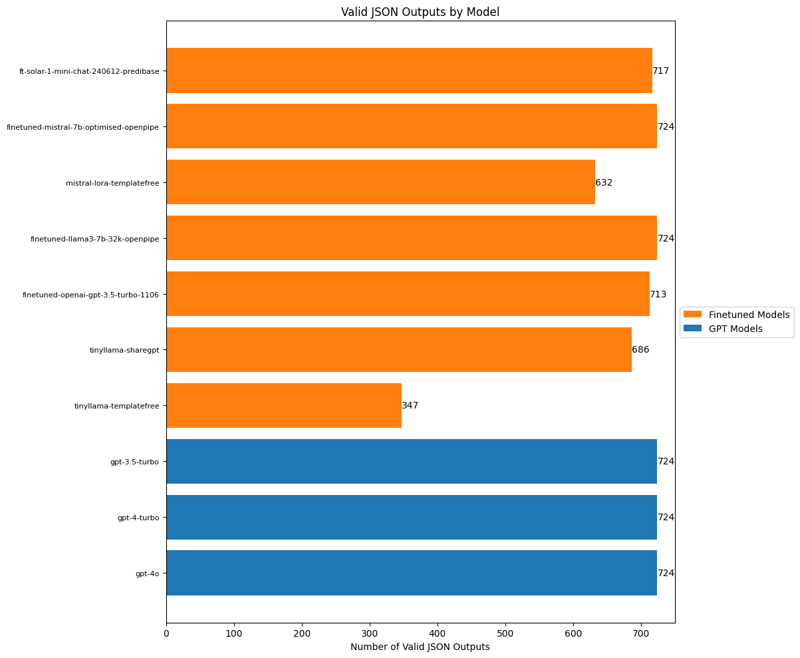
It’s already instructive to see the difference between the templatefree and the sharegpt template’s ability to generate valid JSON for the TinyLlama finetune. The OpenAI models generate valid JSON every single time, as does the finetuned Mistral and Llama3 models.
While writing the code to evaluate the models, I noticed that some entries were blank or had no predictions at all, so I looked into that next.
# find out how many of the predictions are None values or empty strings
missing_values = {
"gpt-4o": 0,
"gpt-4-turbo": 0,
"gpt-3.5-turbo": 0,
"tinyllama-templatefree": 0,
"tinyllama-sharegpt": 0,
"finetuned-openai-gpt-3.5-turbo-1106": 0,
"finetuned-llama3-7b-32k-openpipe": 0,
"mistral-lora-templatefree": 0,
"finetuned-mistral-7b-optimised-openpipe": 0,
"ft-solar-1-mini-chat-240612-predibase": 0,
}
for row in dataset_with_preds:
for model in row["predictions"]:
if row["predictions"][model] is None or row["predictions"][model] == "":
missing_values[model] += 1
print(missing_values){ 'gpt-4o': 0, 'gpt-4-turbo': 0, 'gpt-3.5-turbo': 0, 'tinyllama-templatefree': 0, 'tinyllama-sharegpt': 38, 'finetuned-openai-gpt-3.5-turbo-1106': 0, 'finetuned-llama3-7b-32k-openpipe': 0, 'mistral-lora-templatefree': 0, 'finetuned-mistral-7b-optimised-openpipe': 0, 'ft-solar-1-mini-chat-240612-predibase': 0 }
So were it not for the missing values, the tinyllama-sharegpt model would have had all 724 predictions, and valid JSON as well.
Now we can get into what we’re really interested in: accuracy. I’ll calculate scores for all the properties where it makes sense for us to have a score and then show the results comparing the models.
These are:
start_dateprovincetarget_groupevent_typemin_killedmin_capturedkillqcaptureqkillcaptureraidairstrikenoshotsfiredmin_leaders_killedmin_leaders_capturedImportant note, for all these charts that follow, the total number of tasks was 724, so the numbers are out of a total of 724.
start_date_scores = {
"gpt-4o": 0,
"gpt-4-turbo": 0,
"gpt-3.5-turbo": 0,
"tinyllama-templatefree": 0,
"tinyllama-sharegpt": 0,
"finetuned-openai-gpt-3.5-turbo-1106": 0,
"finetuned-llama3-7b-32k-openpipe": 0,
"mistral-lora-templatefree": 0,
"finetuned-mistral-7b-optimised-openpipe": 0,
"ft-solar-1-mini-chat-240612-predibase": 0,
}
for row in dataset_with_preds:
for model_name, pred in row["predictions"].items():
if not pred:
continue
try:
pred_dict = json.loads(pred)
if (
type(pred_dict) not in (int, float)
and pred_dict.get("start_date")
and (pred_dict["start_date"] == row["start_date"].strftime("%Y-%m-%d"))
):
start_date_scores[model_name] += 1
except json.JSONDecodeError:
pass
print(start_date_scores){ 'gpt-4o': 527, 'gpt-4-turbo': 522, 'gpt-3.5-turbo': 492, 'tinyllama-templatefree': 231, 'tinyllama-sharegpt': 479, 'finetuned-openai-gpt-3.5-turbo-1106': 646, 'finetuned-llama3-7b-32k-openpipe': 585, 'mistral-lora-templatefree': 0, 'finetuned-mistral-7b-optimised-openpipe': 636, 'ft-solar-1-mini-chat-240612-predibase': 649 }
import matplotlib.pyplot as plt
# Separate GPT models and finetuned models
gpt_models = ["gpt-4o", "gpt-4-turbo", "gpt-3.5-turbo"]
finetuned_models = [
model for model in start_date_scores.keys() if model not in gpt_models
]
# Create lists for plotting
models = list(start_date_scores.keys())
scores = list(start_date_scores.values())
colors = ["#1f77b4" if model in gpt_models else "#ff7f0e" for model in models]
# Create the plot
fig, ax = plt.subplots(figsize=(12, 10))
# Plot horizontal bars
bars = ax.barh(models, scores, color=colors)
# Customize the plot
ax.set_xlabel("Number of Correct Start Dates")
ax.set_title("Correct Start Dates by Model")
ax.set_xlim(0, max(scores) + 50) # Set x-axis limit to slightly above max score
# Reduce font size for y-axis labels (model names)
ax.tick_params(axis="y", labelsize=8)
# Add value labels at the end of each bar
for bar in bars:
width = bar.get_width()
ax.text(
width, bar.get_y() + bar.get_height() / 2, f"{width}", ha="left", va="center"
)
# Create custom legend handles
from matplotlib.patches import Patch
legend_elements = [
Patch(facecolor="#ff7f0e", label="Finetuned Models"),
Patch(facecolor="#1f77b4", label="GPT Models"),
]
# Add a legend outside the plot
ax.legend(handles=legend_elements, loc="center left", bbox_to_anchor=(1, 0.5))
# Adjust layout to prevent clipping and make room for the legend
plt.tight_layout()
plt.subplots_adjust(right=0.85)
# Show the plot
plt.show()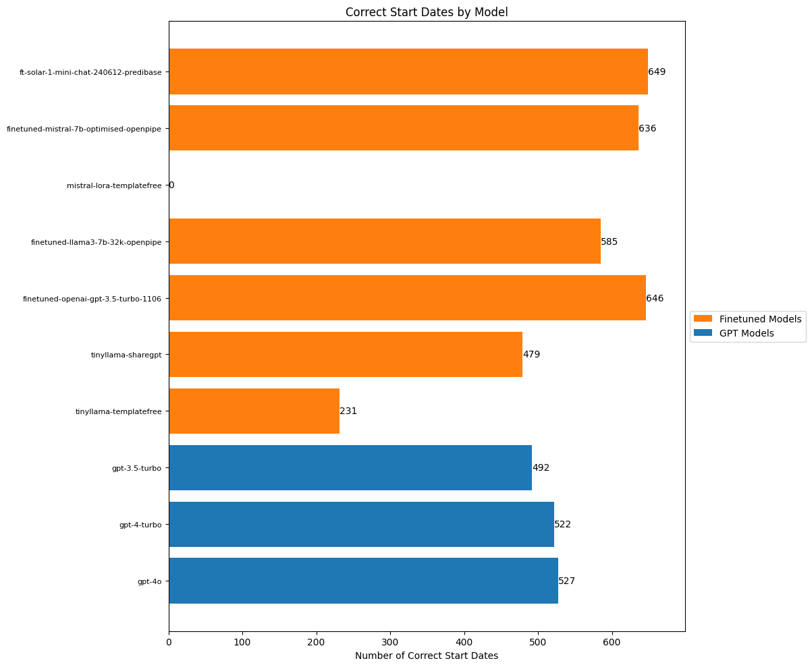
Both Solar and our finetuned GPT3.5 model performed best on predicting which date the event took place. I’m surprised how poorly the OpenAI models did here, actually. And even our best model still got 75 of the dates wrong. This feels like something that I’d want to improve on. Possibly synthetic data could help, or maybe just an improvement in the finetuning prompt as well.
province_scores = {
"gpt-4o": 0,
"gpt-4-turbo": 0,
"gpt-3.5-turbo": 0,
"tinyllama-templatefree": 0,
"tinyllama-sharegpt": 0,
"finetuned-openai-gpt-3.5-turbo-1106": 0,
"finetuned-llama3-7b-32k-openpipe": 0,
"mistral-lora-templatefree": 0,
"finetuned-mistral-7b-optimised-openpipe": 0,
"ft-solar-1-mini-chat-240612-predibase": 0,
}
for row in dataset_with_preds:
for model_name, pred in row["predictions"].items():
if not pred:
continue
try:
pred_dict = json.loads(pred)
if isinstance(pred_dict, dict) and "province" in pred_dict:
pred_provinces = pred_dict["province"]
if isinstance(pred_provinces, str):
pred_provinces = [pred_provinces]
if set(pred_provinces) == set(row["province"]):
province_scores[model_name] += 1
except (json.JSONDecodeError, KeyError, TypeError):
pass
print(province_scores){ 'gpt-4o': 649, 'gpt-4-turbo': 645, 'gpt-3.5-turbo': 595, 'tinyllama-templatefree': 335, 'tinyllama-sharegpt': 660, 'finetuned-openai-gpt-3.5-turbo-1106': 704, 'finetuned-llama3-7b-32k-openpipe': 707, 'mistral-lora-templatefree': 0, 'finetuned-mistral-7b-optimised-openpipe': 711, 'ft-solar-1-mini-chat-240612-predibase': 704 }
import matplotlib.pyplot as plt
# Separate GPT models and finetuned models
gpt_models = ["gpt-4o", "gpt-4-turbo", "gpt-3.5-turbo"]
finetuned_models = [
model for model in province_scores.keys() if model not in gpt_models
]
# Create lists for plotting
models = list(province_scores.keys())
scores = list(province_scores.values())
colors = ["#1f77b4" if model in gpt_models else "#ff7f0e" for model in models]
# Create the plot
fig, ax = plt.subplots(figsize=(12, 10))
# Plot horizontal bars
bars = ax.barh(models, scores, color=colors)
# Customize the plot
ax.set_xlabel("Number of Correct Provinces")
ax.set_title("Correct Provinces by Model")
ax.set_xlim(0, max(scores) + 50) # Set x-axis limit to slightly above max score
# Reduce font size for y-axis labels (model names)
ax.tick_params(axis="y", labelsize=8)
# Add value labels at the end of each bar
for bar in bars:
width = bar.get_width()
ax.text(
width, bar.get_y() + bar.get_height() / 2, f"{width}", ha="left", va="center"
)
# Create custom legend handles
from matplotlib.patches import Patch
legend_elements = [
Patch(facecolor="#ff7f0e", label="Finetuned Models"),
Patch(facecolor="#1f77b4", label="GPT Models"),
]
# Add a legend outside the plot
ax.legend(handles=legend_elements, loc="center left", bbox_to_anchor=(1, 0.5))
# Adjust layout to prevent clipping and make room for the legend
plt.tight_layout()
plt.subplots_adjust(right=0.85)
# Show the plot
plt.show()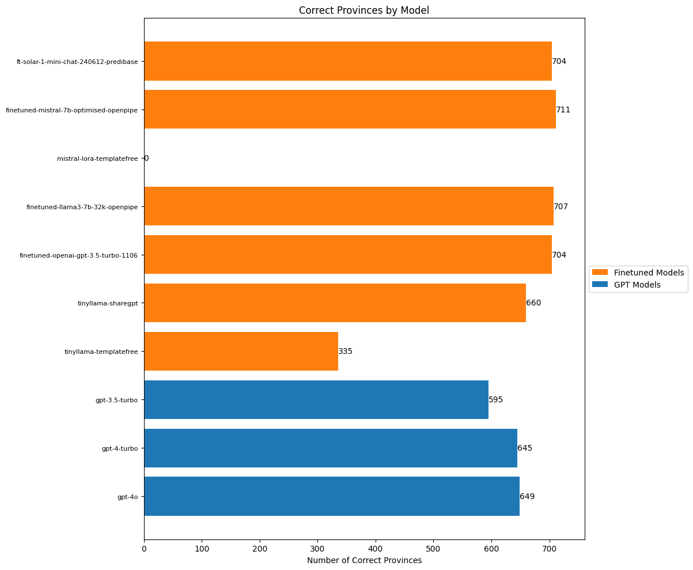
In what will become a theme, the finetuned models actually outperform the OpenAI models, only making a few mistakes. Once again I’m surprised how poorly GPT3.5 did on this task.
Here there are potentially multiple groups mentioned as target group so I’ll give a score out of 1 of how many of the groups the model predicted were correct.
import matplotlib.pyplot as plt
target_group_scores = {
"gpt-4o": 0,
"gpt-4-turbo": 0,
"gpt-3.5-turbo": 0,
"tinyllama-templatefree": 0,
"tinyllama-sharegpt": 0,
"finetuned-openai-gpt-3.5-turbo-1106": 0,
"finetuned-llama3-7b-32k-openpipe": 0,
"mistral-lora-templatefree": 0,
"finetuned-mistral-7b-optimised-openpipe": 0,
"ft-solar-1-mini-chat-240612-predibase": 0,
}
for row in dataset_with_preds:
for model_name, pred in row["predictions"].items():
if not pred:
continue
try:
pred_dict = json.loads(pred)
if isinstance(pred_dict, dict) and "target_group" in pred_dict:
pred_groups = pred_dict["target_group"]
if isinstance(pred_groups, str):
pred_groups = [pred_groups]
correct_groups = row["target_group"]
if isinstance(correct_groups, str):
correct_groups = [correct_groups]
if correct_groups:
score = len(set(pred_groups) & set(correct_groups)) / len(
set(correct_groups)
)
target_group_scores[model_name] += score
except (json.JSONDecodeError, KeyError, TypeError):
pass
# Separate GPT models and finetuned models
gpt_models = ["gpt-4o", "gpt-4-turbo", "gpt-3.5-turbo"]
finetuned_models = [
model for model in target_group_scores.keys() if model not in gpt_models
]
# Create lists for plotting
models = list(target_group_scores.keys())
scores = list(target_group_scores.values())
colors = ["#1f77b4" if model in gpt_models else "#ff7f0e" for model in models]
# Create the plot
fig, ax = plt.subplots(figsize=(12, 10))
# Plot horizontal bars
bars = ax.barh(models, scores, color=colors)
# Customize the plot
ax.set_xlabel("Target Group Accuracy Score")
ax.set_title("Target Group Accuracy by Model")
ax.set_xlim(0, max(scores) + 50) # Set x-axis limit to slightly above max score
# Reduce font size for y-axis labels (model names)
ax.tick_params(axis="y", labelsize=8)
# Add value labels at the end of each bar
for bar in bars:
width = bar.get_width()
ax.text(
width,
bar.get_y() + bar.get_height() / 2,
f"{width:.2f}",
ha="left",
va="center",
)
# Create custom legend handles
from matplotlib.patches import Patch
legend_elements = [
Patch(facecolor="#ff7f0e", label="Finetuned Models"),
Patch(facecolor="#1f77b4", label="GPT Models"),
]
# Add a legend outside the plot
ax.legend(handles=legend_elements, loc="center left", bbox_to_anchor=(1, 0.5))
# Adjust layout to prevent clipping and make room for the legend
plt.tight_layout()
plt.subplots_adjust(right=0.85)
# Show the plot
plt.show()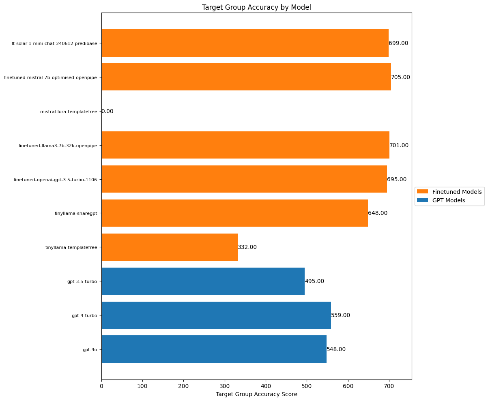
Finetuned models doing significantly better than OpenAI for target group identification. I suspect that this would degrade if we added some new groups who weren’t in the training data (as I’d written about in my last post.)
import matplotlib.pyplot as plt
from matplotlib.patches import Patch
from typing import Dict, Union
def create_accuracy_chart(
scores: Dict[str, Union[int, float]], title: str, xlabel: str
) -> None:
# Separate GPT models and finetuned models
gpt_models = ["gpt-4o", "gpt-4-turbo", "gpt-3.5-turbo"]
finetuned_models = [model for model in scores.keys() if model not in gpt_models]
# Create lists for plotting
models = list(scores.keys())
scores_list = list(scores.values())
colors = ["#1f77b4" if model in gpt_models else "#ff7f0e" for model in models]
# Create the plot
fig, ax = plt.subplots(figsize=(12, 10))
# Plot horizontal bars
bars = ax.barh(models, scores_list, color=colors)
# Customize the plot
ax.set_xlabel(xlabel)
ax.set_title(title)
ax.set_xlim(
0, max(scores_list) + 50
) # Set x-axis limit to slightly above max score
# Reduce font size for y-axis labels (model names)
ax.tick_params(axis="y", labelsize=8)
# Add value labels at the end of each bar
for bar in bars:
width = bar.get_width()
ax.text(
width,
bar.get_y() + bar.get_height() / 2,
f"{width:.2f}" if isinstance(width, float) else f"{width}",
ha="left",
va="center",
)
# Create custom legend handles
legend_elements = [
Patch(facecolor="#ff7f0e", label="Finetuned Models"),
Patch(facecolor="#1f77b4", label="GPT Models"),
]
# Add a legend outside the plot
ax.legend(handles=legend_elements, loc="center left", bbox_to_anchor=(1, 0.5))
# Adjust layout to prevent clipping and make room for the legend
plt.tight_layout()
plt.subplots_adjust(right=0.85)
# Show the plot
plt.show()
event_type_scores = {
"gpt-4o": 0,
"gpt-4-turbo": 0,
"gpt-3.5-turbo": 0,
"tinyllama-templatefree": 0,
"tinyllama-sharegpt": 0,
"finetuned-openai-gpt-3.5-turbo-1106": 0,
"finetuned-llama3-7b-32k-openpipe": 0,
"mistral-lora-templatefree": 0,
"finetuned-mistral-7b-optimised-openpipe": 0,
"ft-solar-1-mini-chat-240612-predibase": 0,
}
for row in dataset_with_preds:
for model_name, pred in row["predictions"].items():
if not pred:
continue
try:
pred_dict = json.loads(pred)
if isinstance(pred_dict, dict) and "event_type" in pred_dict:
pred_types = pred_dict["event_type"]
if isinstance(pred_types, str):
pred_types = [pred_types]
correct_types = row["event_type"]
if isinstance(correct_types, str):
correct_types = [correct_types]
if correct_types:
score = len(set(pred_types) & set(correct_types)) / len(
set(correct_types)
)
event_type_scores[model_name] += score
except (json.JSONDecodeError, KeyError, TypeError):
pass
create_accuracy_chart(
scores=event_type_scores,
title="Event Type Accuracy by Model",
xlabel="Event Type Accuracy Score",
)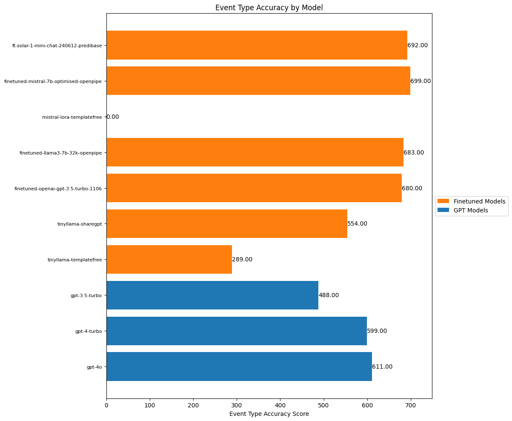
Event type is actually one of the hardest categories since there are actually some semantically overlapping categories and it’s sometimes even hard for a human annotator, but once again the finetuned models do pretty well.
min_killedimport json
min_killed_scores = {
"gpt-4o": 0,
"gpt-4-turbo": 0,
"gpt-3.5-turbo": 0,
"tinyllama-templatefree": 0,
"tinyllama-sharegpt": 0,
"finetuned-openai-gpt-3.5-turbo-1106": 0,
"finetuned-llama3-7b-32k-openpipe": 0,
"mistral-lora-templatefree": 0,
"finetuned-mistral-7b-optimised-openpipe": 0,
"ft-solar-1-mini-chat-240612-predibase": 0,
}
for row in dataset_with_preds:
for model_name, pred in row["predictions"].items():
if not pred:
continue
try:
pred_dict = json.loads(pred)
if isinstance(pred_dict, dict) and "min_killed" in pred_dict:
pred_min_killed = pred_dict["min_killed"]
correct_min_killed = row["min_killed"]
if pred_min_killed == correct_min_killed:
min_killed_scores[model_name] += 1
except (json.JSONDecodeError, KeyError, TypeError):
pass
create_accuracy_chart(
scores=min_killed_scores,
title="'min_killed' Accuracy by Model",
xlabel="'min_killed' Accuracy Score"
)For these number estimations, suddenly the playing fields gets leveled between the finetuned and the OpenAI models. Mistral still comes out on top, but not by much! And it’s impressive how the OpenAI models do really well at this. I suspect this is because of the whole section in the prompt which explained the rubric that was used for annotating the examples:
Annotation notes: A ‘faciliator’ is not a leader. If a press release states that ‘insurgents’ were detained without further details, assign a minimum number of two detained. Interpret ‘a couple’ as two. Interpret ‘several’ as at least three, even though it may sometimes refer to seven or eight. Classify the terms ‘a few’, ‘some’, ‘a group’, ‘a small group’, and ‘multiple’ as denoting at least three, even if they sometimes refer to larger numbers. Choose the smaller number if no other information is available in the press release to come up with a minimally acceptable figure. Interpret ‘numerous’ and ‘a handful’ as at least four, and ‘a large number’ as at least five.
min_capturedimport json
min_captured_scores = {
"gpt-4o": 0,
"gpt-4-turbo": 0,
"gpt-3.5-turbo": 0,
"tinyllama-templatefree": 0,
"tinyllama-sharegpt": 0,
"finetuned-openai-gpt-3.5-turbo-1106": 0,
"finetuned-llama3-7b-32k-openpipe": 0,
"mistral-lora-templatefree": 0,
"finetuned-mistral-7b-optimised-openpipe": 0,
"ft-solar-1-mini-chat-240612-predibase": 0,
}
for row in dataset_with_preds:
for model_name, pred in row["predictions"].items():
if not pred:
continue
try:
pred_dict = json.loads(pred)
if isinstance(pred_dict, dict) and "min_captured" in pred_dict:
pred_min_captured = pred_dict["min_captured"]
correct_min_captured = row["min_captured"]
if pred_min_captured == correct_min_captured:
min_captured_scores[model_name] += 1
except (json.JSONDecodeError, KeyError, TypeError):
pass
create_accuracy_chart(
scores=min_captured_scores,
title="'min_captured' Accuracy by Model",
xlabel="'min_captured' Accuracy Score"
)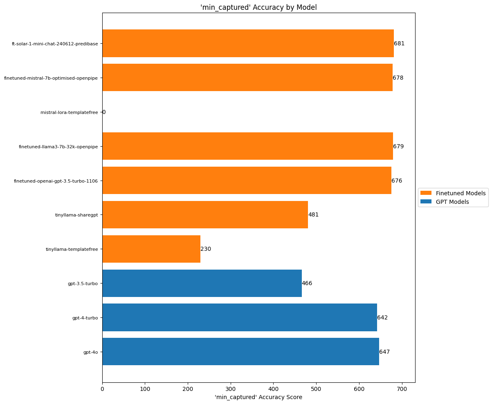
killqimport json
killq_scores = {
"gpt-4o": 0,
"gpt-4-turbo": 0,
"gpt-3.5-turbo": 0,
"tinyllama-templatefree": 0,
"tinyllama-sharegpt": 0,
"finetuned-openai-gpt-3.5-turbo-1106": 0,
"finetuned-llama3-7b-32k-openpipe": 0,
"mistral-lora-templatefree": 0,
"finetuned-mistral-7b-optimised-openpipe": 0,
"ft-solar-1-mini-chat-240612-predibase": 0,
}
for row in dataset_with_preds:
for model_name, pred in row["predictions"].items():
if not pred:
continue
try:
pred_dict = json.loads(pred)
if isinstance(pred_dict, dict) and "killq" in pred_dict:
pred_killq = pred_dict["killq"]
correct_killq = row["killq"]
if pred_killq == correct_killq:
killq_scores[model_name] += 1
except (json.JSONDecodeError, KeyError, TypeError):
pass
create_accuracy_chart(
scores=killq_scores,
title="'killq' Accuracy by Model",
xlabel="'killq' Accuracy Score"
)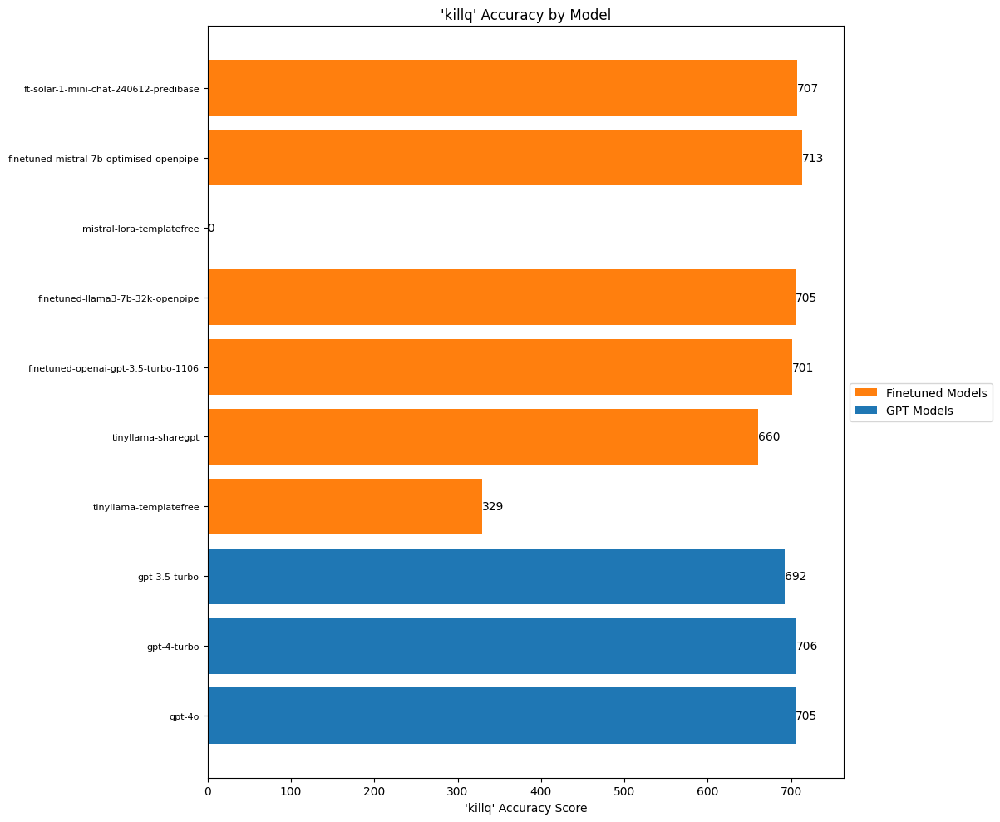
I’d expect really high accuracy for these boolean attributes, and basically almost all the models were able to give this. Still, our finetuned Mistral still beats out GPT-4o best score.
captureqimport json
captureq_scores = {
"gpt-4o": 0,
"gpt-4-turbo": 0,
"gpt-3.5-turbo": 0,
"tinyllama-templatefree": 0,
"tinyllama-sharegpt": 0,
"finetuned-openai-gpt-3.5-turbo-1106": 0,
"finetuned-llama3-7b-32k-openpipe": 0,
"mistral-lora-templatefree": 0,
"finetuned-mistral-7b-optimised-openpipe": 0,
"ft-solar-1-mini-chat-240612-predibase": 0,
}
for row in dataset_with_preds:
for model_name, pred in row["predictions"].items():
if not pred:
continue
try:
pred_dict = json.loads(pred)
if isinstance(pred_dict, dict) and "captureq" in pred_dict:
pred_captureq = pred_dict["captureq"]
correct_captureq = row["captureq"]
if pred_captureq == correct_captureq:
captureq_scores[model_name] += 1
except (json.JSONDecodeError, KeyError, TypeError):
pass
create_accuracy_chart(
scores=captureq_scores,
title="'captureq' Accuracy by Model",
xlabel="'captureq' Accuracy Score"
)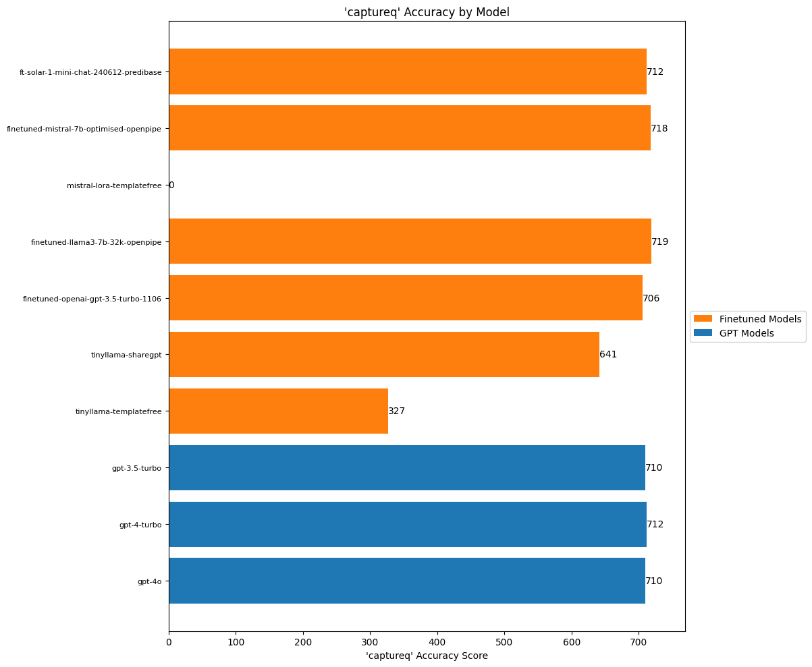
killcaptureraidimport json
killcaptureraid_scores = {
"gpt-4o": 0,
"gpt-4-turbo": 0,
"gpt-3.5-turbo": 0,
"tinyllama-templatefree": 0,
"tinyllama-sharegpt": 0,
"finetuned-openai-gpt-3.5-turbo-1106": 0,
"finetuned-llama3-7b-32k-openpipe": 0,
"mistral-lora-templatefree": 0,
"finetuned-mistral-7b-optimised-openpipe": 0,
"ft-solar-1-mini-chat-240612-predibase": 0,
}
for row in dataset_with_preds:
for model_name, pred in row["predictions"].items():
if not pred:
continue
try:
pred_dict = json.loads(pred)
if isinstance(pred_dict, dict) and "killcaptureraid" in pred_dict:
pred_killcaptureraid = pred_dict["killcaptureraid"]
correct_killcaptureraid = row["killcaptureraid"]
if pred_killcaptureraid == correct_killcaptureraid:
killcaptureraid_scores[model_name] += 1
except (json.JSONDecodeError, KeyError, TypeError):
pass
create_accuracy_chart(
scores=killcaptureraid_scores,
title="'killcaptureraid' Accuracy by Model",
xlabel="'killcaptureraid' Accuracy Score"
)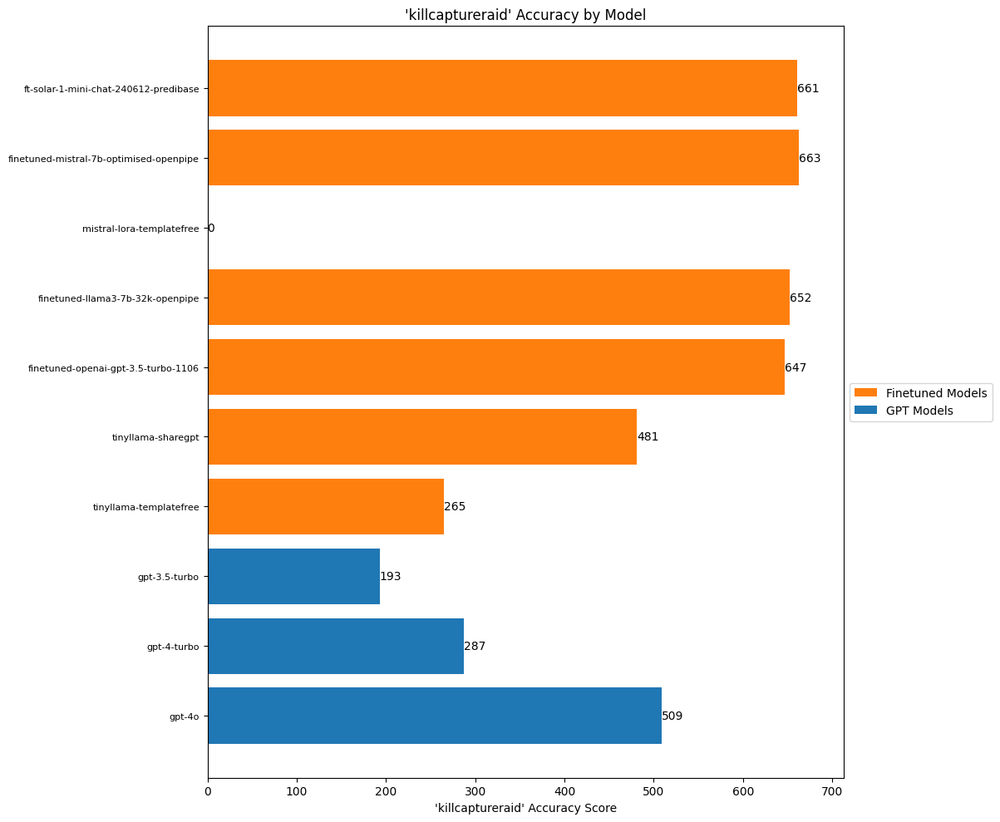
This is another attribute where it’s clear the lack of signposting in the prompts to the OpenAI models put them at a disadvantage. The term ‘kill-capture raid’ is a term of art and it was used in a specific way for the labelling. OpenAI knows nothing about how I made those calls, which explains why they performed so poorly here.
airstrikeimport json
airstrike_scores = {
"gpt-4o": 0,
"gpt-4-turbo": 0,
"gpt-3.5-turbo": 0,
"tinyllama-templatefree": 0,
"tinyllama-sharegpt": 0,
"finetuned-openai-gpt-3.5-turbo-1106": 0,
"finetuned-llama3-7b-32k-openpipe": 0,
"mistral-lora-templatefree": 0,
"finetuned-mistral-7b-optimised-openpipe": 0,
"ft-solar-1-mini-chat-240612-predibase": 0,
}
for row in dataset_with_preds:
for model_name, pred in row["predictions"].items():
if not pred:
continue
try:
pred_dict = json.loads(pred)
if isinstance(pred_dict, dict) and "airstrike" in pred_dict:
pred_airstrike = pred_dict["airstrike"]
correct_airstrike = row["airstrike"]
if pred_airstrike == correct_airstrike:
airstrike_scores[model_name] += 1
except (json.JSONDecodeError, KeyError, TypeError):
pass
create_accuracy_chart(
scores=airstrike_scores,
title="'airstrike' Accuracy by Model",
xlabel="'airstrike' Accuracy Score"
)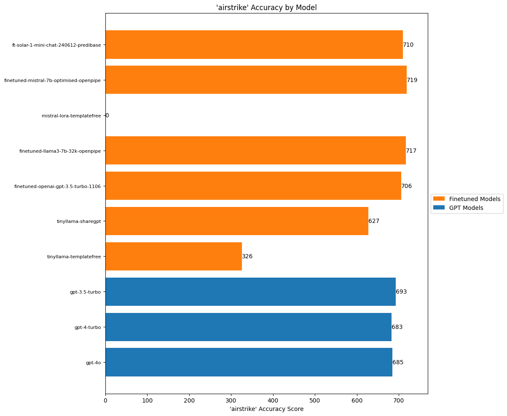
noshotsfiredimport json
noshotsfired_scores = {
"gpt-4o": 0,
"gpt-4-turbo": 0,
"gpt-3.5-turbo": 0,
"tinyllama-templatefree": 0,
"tinyllama-sharegpt": 0,
"finetuned-openai-gpt-3.5-turbo-1106": 0,
"finetuned-llama3-7b-32k-openpipe": 0,
"mistral-lora-templatefree": 0,
"finetuned-mistral-7b-optimised-openpipe": 0,
"ft-solar-1-mini-chat-240612-predibase": 0,
}
for row in dataset_with_preds:
for model_name, pred in row["predictions"].items():
if not pred:
continue
try:
pred_dict = json.loads(pred)
if isinstance(pred_dict, dict) and "noshotsfired" in pred_dict:
pred_noshotsfired = pred_dict["noshotsfired"]
correct_noshotsfired = row["noshotsfired"]
if pred_noshotsfired == correct_noshotsfired:
noshotsfired_scores[model_name] += 1
except (json.JSONDecodeError, KeyError, TypeError):
pass
create_accuracy_chart(
scores=noshotsfired_scores,
title="'noshotsfired' Accuracy by Model",
xlabel="'noshotsfired' Accuracy Score"
)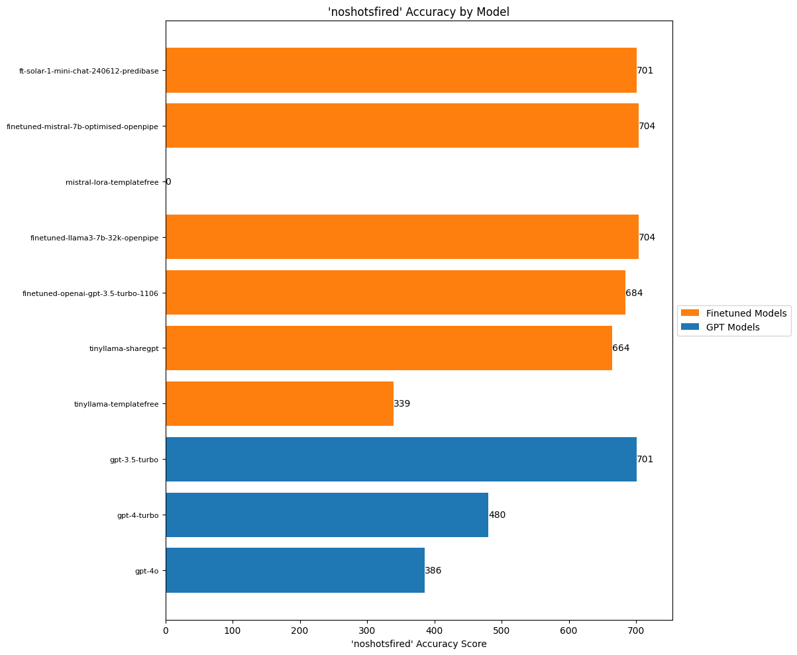
I’m not quite sure why the OpenAI models are performing in the reverse order of what you’d expect. Recall that the noshotsfired attribute refers to whether the press release states that no shots were fired during a particular raid / event. (For a certain period the press releases were keen to mention this and it was a metric that was particularly useful for ISAF as a public relations gimmick.)
I can think of some semi-anthropomorphizing ways to explain this around how the GPT-4 class of models were ‘overthinking’ the label, but more investigation would be needed to really understand this.
min_leaders_killedimport json
min_leaders_killed_scores = {
"gpt-4o": 0,
"gpt-4-turbo": 0,
"gpt-3.5-turbo": 0,
"tinyllama-templatefree": 0,
"tinyllama-sharegpt": 0,
"finetuned-openai-gpt-3.5-turbo-1106": 0,
"finetuned-llama3-7b-32k-openpipe": 0,
"mistral-lora-templatefree": 0,
"finetuned-mistral-7b-optimised-openpipe": 0,
"ft-solar-1-mini-chat-240612-predibase": 0,
}
for row in dataset_with_preds:
for model_name, pred in row["predictions"].items():
if not pred:
continue
try:
pred_dict = json.loads(pred)
if isinstance(pred_dict, dict) and "min_leaders_killed" in pred_dict:
pred_min_leaders_killed = pred_dict["min_leaders_killed"]
correct_min_leaders_killed = row["min_leaders_killed"]
if isinstance(pred_min_leaders_killed, int) and isinstance(correct_min_leaders_killed, int):
if pred_min_leaders_killed == correct_min_leaders_killed:
min_leaders_killed_scores[model_name] += 1
except (json.JSONDecodeError, KeyError, TypeError):
pass
total_entries = len(dataset_with_preds)
create_accuracy_chart(
scores=min_leaders_killed_scores,
title=f"Min Leaders Killed Accuracy by Model (out of {total_entries} entries)",
xlabel="Min Leaders Killed Accuracy Score"
)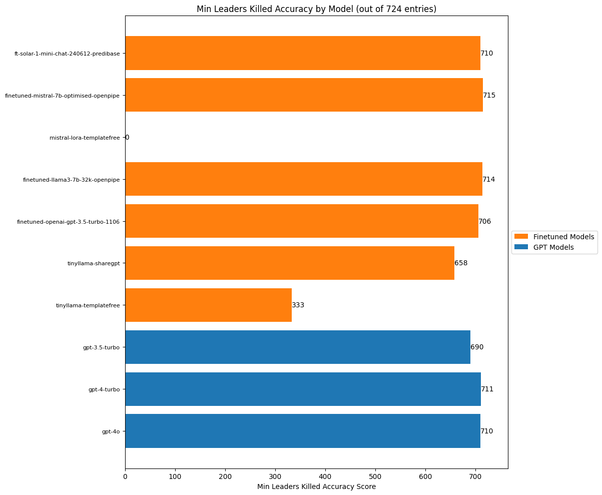
We often hear about how LLMs are bad with numbers, how they default to certain values and so on, so I was surprised to see such high scores across the board for this task. I imagine this is something that everyone has been trying to improve and it shows. Still, though, our finetuned models do best.
min_leaders_capturedimport json
min_leaders_captured_scores = {
"gpt-4o": 0,
"gpt-4-turbo": 0,
"gpt-3.5-turbo": 0,
"tinyllama-templatefree": 0,
"tinyllama-sharegpt": 0,
"finetuned-openai-gpt-3.5-turbo-1106": 0,
"finetuned-llama3-7b-32k-openpipe": 0,
"mistral-lora-templatefree": 0,
"finetuned-mistral-7b-optimised-openpipe": 0,
"ft-solar-1-mini-chat-240612-predibase": 0,
}
for row in dataset_with_preds:
for model_name, pred in row["predictions"].items():
if not pred:
continue
try:
pred_dict = json.loads(pred)
if isinstance(pred_dict, dict) and "min_leaders_captured" in pred_dict:
pred_min_leaders_captured = pred_dict["min_leaders_captured"]
correct_min_leaders_captured = row["min_leaders_captured"]
if isinstance(pred_min_leaders_captured, int) and isinstance(correct_min_leaders_captured, int):
if pred_min_leaders_captured == correct_min_leaders_captured:
min_leaders_captured_scores[model_name] += 1
except (json.JSONDecodeError, KeyError, TypeError):
pass
total_entries = len(dataset_with_preds)
create_accuracy_chart(
scores=min_leaders_captured_scores,
title=f"Min Leaders Captured Accuracy by Model (out of {total_entries} entries)",
xlabel="Min Leaders Captured Accuracy Score"
)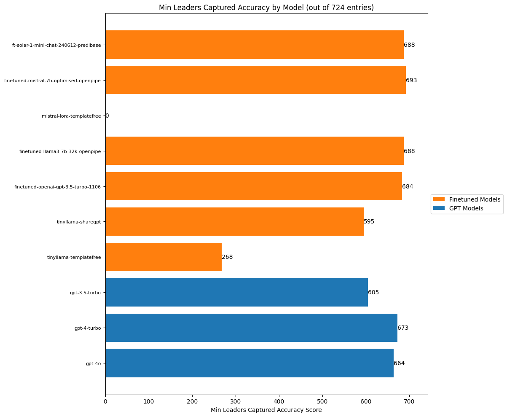
Let’s add all these individual competency scores up, average them out and get final scores for how well our models do on accuracy.
# adapt the function slightly
import matplotlib.pyplot as plt
from matplotlib.patches import Patch
from typing import Dict, Union
def create_aggregate_accuracy_chart(
scores: Dict[str, Union[int, float]], title: str, xlabel: str
) -> None:
# Separate GPT models and finetuned models
gpt_models = ["gpt-4o", "gpt-4-turbo", "gpt-3.5-turbo"]
finetuned_models = [model for model in scores.keys() if model not in gpt_models]
# Create lists for plotting
models = list(scores.keys())
scores_list = list(scores.values())
colors = ["#1f77b4" if model in gpt_models else "#ff7f0e" for model in models]
# Create the plot
fig, ax = plt.subplots(figsize=(12, 10))
# Plot horizontal bars
bars = ax.barh(models, scores_list, color=colors)
# Customize the plot
ax.set_xlabel(xlabel)
ax.set_title(title)
ax.set_xlim(0, 100) # Set x-axis limit to 100
# Reduce font size for y-axis labels (model names)
ax.tick_params(axis="y", labelsize=8)
# Add value labels at the end of each bar
for bar in bars:
width = bar.get_width()
ax.text(
width,
bar.get_y() + bar.get_height() / 2,
f"{width:.2f}" if isinstance(width, float) else f"{width}",
ha="left",
va="center",
)
# Create custom legend handles
legend_elements = [
Patch(facecolor="#ff7f0e", label="Finetuned Models"),
Patch(facecolor="#1f77b4", label="GPT Models"),
]
# Add a legend outside the plot
ax.legend(handles=legend_elements, loc="center left", bbox_to_anchor=(1, 0.5))
# Adjust layout to prevent clipping and make room for the legend
plt.tight_layout()
plt.subplots_adjust(right=0.85)
# Show the plot
plt.show()
# List of all the score dictionaries
score_dicts = [
start_date_scores,
province_scores,
target_group_scores,
event_type_scores,
min_killed_scores,
min_captured_scores,
killq_scores,
captureq_scores,
killcaptureraid_scores,
airstrike_scores,
noshotsfired_scores,
min_leaders_killed_scores,
min_leaders_captured_scores,
]
# Get the list of models
models = list(start_date_scores.keys())
# Initialize the aggregate scores dictionary
aggregate_scores = {model: 0 for model in models}
# Calculate the aggregate score for each model
for model in models:
total_score = 0
for score_dict in score_dicts:
total_score += score_dict[model]
aggregate_scores[model] = (total_score / len(score_dicts)) / len(dataset_with_preds) * 100
# Create the aggregate score chart
create_aggregate_accuracy_chart(
scores=aggregate_scores,
title="Aggregate Accuracy Score by Model (0-100 Scale)",
xlabel="Aggregate Accuracy Score",
)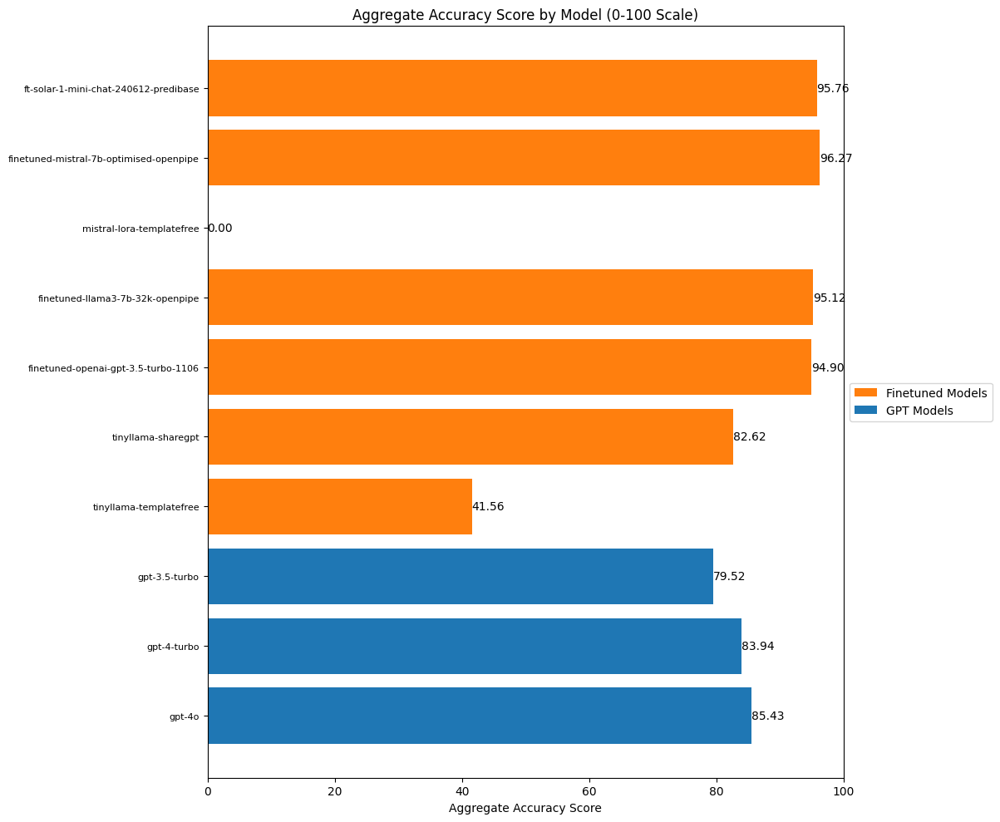
Surprising even me, the finetuned models beat out the GPT-class models from OpenAI. Actually even TinyLlama beats out GPT 3.5 Turbo!
Our top performer was Mistral-7B (finetuned on OpenPipe), very closely followed by Solar LLM and Llama3-7B. Just looking at the scores above it seems like anyone finetuning models for structured data extraction would do well to start of with Mistral-7B, Solar 7B or Llama3-7B and then see which performs best, though with the caveat that they might all be more or less the same for accuracy. There are probably different tradeoffs when it comes to serving the model and the efficiency and latency there, but still these three do really well.
I think if I were to stuff a few more examples into the prompt (as well a bit more explanation and rules) I could get the OpenAI models to perform even better, but at a certain point you have to remember all the things that having your own finetuned model brings you:
On the cost, it’s a bit hard to make that comparison or claim right now, especially given the economies of scale that the large cloud providers can rely on, but in a real-world use case where you were building this model for repeated inference over a long-term time frame, then you would have a better chance of having the cost argument make sense, particularly since the only way to make the OpenAI inference calls better to stuff them full of examples and extra explanation, significantly bloating the cost-per-query.
That said, there are some real tradeoffs that come up when finetuning a model, and I’ll get to some of those in my concluding thoughts.
First off I’m so pleased that the oft-repeated “finetune your model and get better performance than with GPT-4” actually turned out to be true! And not only was it true, but it was true with relatively little tweaks and adaptations. Remember all the above models are the first finetunes I made with the data I brought. I basically used just the default values for everything and so it worked out of the box.
For any further work I’ll focus on the Solar, Llama3 and Mistral 7B models which performed best. I used cloud finetuning services to finetune the best performing versions of those models, so I’ll want to get that all working locally as well.
Most of the evaluation work is represented here in this notebook, and that was perhaps the seeds of my own misfortune. I had some models that worked locally, and then a bunch of other models deployed in different environments and with different services.
Not only that, but it was pretty slow to iterate through the 724 row so my test data (which the models hadn’t seen during finetuning, just to be clear) since I implemented it fairly naively.
If I were to now make some updates to the models, or get them working locally, I’d really want to make sure that I have a way to run these evals locally as well. Moreover, I’d want a way to run a subset of the evals (i.e. on a slice of the data) and then at some point switch that out so that they could run across all the data.
All of this is completely within the realm of possible, but for this round I was more focused on getting the results than I was about making the process repeatable and/or efficient. I know I can’t run all the models concurrently on the same machine, so maybe the way forward is simply to have a reliable cloud GPU provider like Modal where I can farm out these evaluations. I had a really good experience with them when I used them, so that’s probably the way forward there.
In general, it was also painful having the models living in different places. I had to remember so many things. In any ideal world, you want a standard interface for inference to all your models, especially if they’re for the same use case or project. It’s convenient that my finetuned GPT3.5 is automatically deployed and served by OpenAI, and the same goes for Llama3 and Solar or Mistral, but I want a single place where I can see them all. Until now I hadn’t really seen this project or problem as being so much about MLOps, but when you have multiple models in play and you’re finetuning and updating them and data is changing all the time, then you’ll need a way of managing all this.
This is funny to me since I work at an MLOps company – we build an open-source MLOps framework that helps you set up a platform – but I hadn’t anticipated it’d reach this point where I’d need something like a ZenML so soon. This is, of course, one of the major tradeoffs of finetuning LLMs, in that you have to manage all this stuff in order to make it work reliably and repeatably. Even at this early stage of my project, it’s clear that you need a way to keep everything straight without making mistakes.
Even though the evaluations were somewhat painful to implement (at least in the form of this Jupyter notebook), they have given me an amazing gift in that I now have a task-specific way to know whether any of the improvements or refinements to either the training data or to the model are helping move me forward. Without this I’d essentially be flying blind.
I had originally thought and suggested that I’d want to train multiple models to be super-specialists in their field, so for example to have one model that was really good at estimating how many people were captured in a particular event. Seeing the performance of my models, I’m not sure that’s the obvious next step for this project, or if I’d really be able to boost the accuracy by a significant amount by taking that approach.
This project is all about accuracy, so it’s possible that I might want to try that out, but for now I’m still exploring all the different phases of the LLM finetuning process so I’ll put the submodels idea on the backburner.
The first obvious next step is to run some evaluations for the non-accuracy-related tests mentioned in my last blog. For example, I’d like to see how it performs with out of domain data (i.e. completely made up data about something completely different).
The other next step is to get into some of the details around model serving. I’d like to take my top three performers and dive into how LLM model serving is done. I’m familiar with non-LLM model serving and some of the ways people do that through my work, but LLM serving has it’s own tricks, tradeoffs and tools and I’m eager to learn more about those.
If this was a problem that I was deeply invested in solving beyond these already excellent results, I’d probably also want to dive into the areas where my LLMs struggled. So I’d take all the places where my LLMs failed to get the answer correct, load them up into some kind of web interface like Lilac or Argilla and really inspect my data further. Understanding the failure scenarios will probably do more for the accuracy than any tweaking of the finetuning parameters or the like.
For now, I’m just happy the finetuned models beat GPT-4!